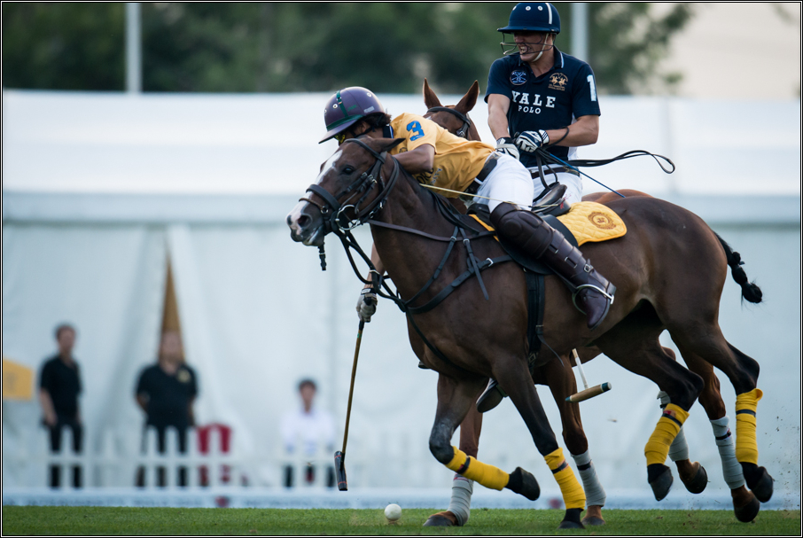

I joined the Yale Polo club my freshman spring. I had barely ever ridden a horse before, but a friend who was on the team convinced me and the rest is history...
This is me now...
The guy in the yellow jersey schooling me in the photo is my friend Jerome from Oxford.
Actually that is not now. That was actually this past summer when the team was invited to play against Harvard, Oxford and Cambridge in Tianjin, China.
The team has fallen on some hard times, obviously difficult to believe seeing how awesome I look in China. But we have since we were kicked off campus a few years ago. Trust me polo is a lot more shoveling horse feces than it is models and bottles. We are currently looking for donations to purchase a new facility.